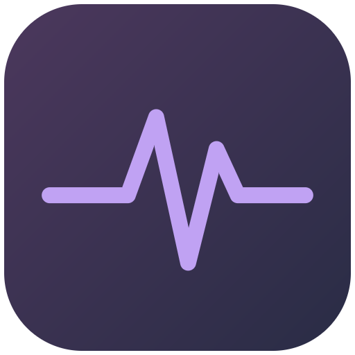

PULSEТебя пригласили в Pulse
Голос, чат и игры с друзьями — со сквозным шифрованием. Открываем приложение…
- Нет Pulse? Скачай и установи — как установить.
- Вернись к этой ссылке и нажми «Открыть в Pulse» — или вставь скопированный код на экране регистрации.
- Придумай ник и пароль — и ты в группе.
Код одноразовый и действует 24 часа. Не пересылай его: в нём ключ доступа к переписке.
Ссылка неполная
В ссылке нет кода приглашения или он обрезан.
Попроси того, кто тебя пригласил, прислать ссылку целиком. Само приложение можно скачать уже сейчас.